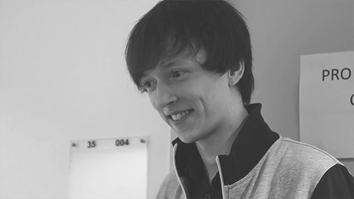
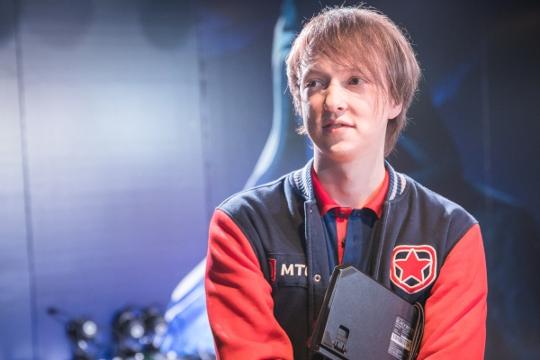
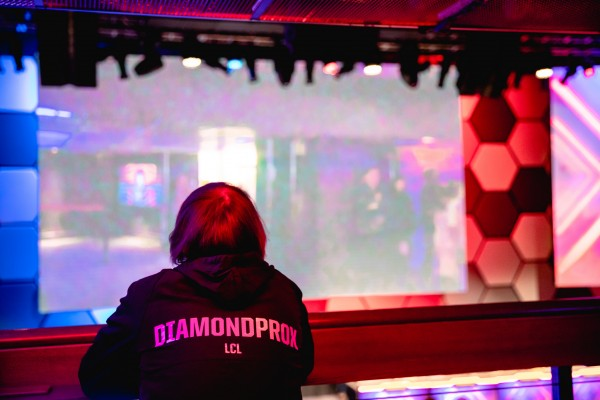
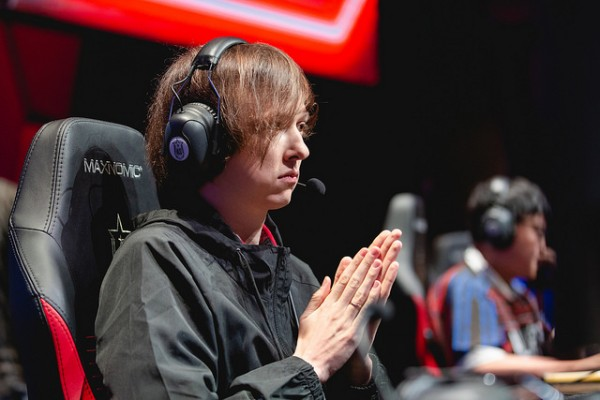
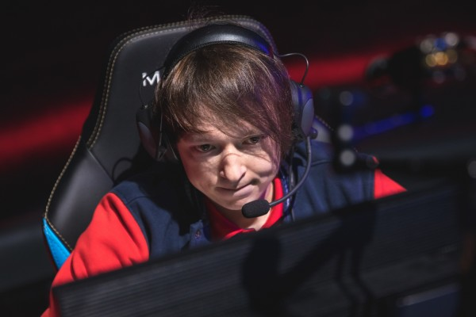

Tin nổi bật |
Tin nổi bật | September 4,2019 |
September 4,2019 | By: Hulkk
By: Hulkk
Có thể nói mùa giải 2018 là một mùa giải vô cùng đáng nhớ đối với rất nhiều người hâm mộ trên toàn thế giới.
Tuyển thủ đi rừng huyền thoại người Nga Danil “Diamondprox” Reshetnikov là một trong những tuyển thủ đã thi đấu lâu năm nhất từ trước đến nay. Bắt đầu nổi tiếng vào năm 2012, lối đi rừng của anh đã trở thành niềm cảm hứng cho rất nhiều tuyển thủ đi rừng khác trên toàn thế giới học hỏi. Và mặc dù đã trải qua rất nhiều thất bại trong những năm vừa qua, thế nhưng tầm ảnh hưởng và sự tôn trọng mà người hâm mộ giành cho Diamondprox vẫn luôn còn đó.
Trong giải đấu LCL của Nga, Diamondprox đã dẫn dắt Gambit Esports tới chức vô địch trong cả mùa xuân và mùa hè. Chức vô địch của Gambit trong giải mùa xuân đã giúp họ đại diện cho khu vực LCL tham dự giải đấu Mid-Season Invitational, nhưng rồi họ lại không thể lọt được vào vòng bảng. Và sau đó vài tháng, Gambit Esports tiếp tục giành được chức vô địch giải mùa hè và đồng thời đã tiến được tới vòng cuối cùng của vòng khởi động Chung Kết Thế Giới 2018.
Mặc dù đã để thua trước Cloud 9, thế nhưng Gambit Esports đã chứng minh cho toàn thế giới thấy rằng họ chính xác là một viên ngọc quý của một khu vực LCL đang phát triển. Diamondprox và người đi đường giữa Mykhailo “Kira” Harmash là 2 tuyển thủ đã đủ điều kiện đại diện cho khu vực LCL tham dự giải đấu Siêu Sao Đại Chiến 2018 nhờ vào màn trình diễn nổi bật của họ trong những giải đấu quốc tế trong năm qua.
Trong ngày đầu tiên của Siêu Sao Đại Chiến 2018, Diamondprox đã có một buổi phỏng vấn cùng Invenglobal để để nhìn lại một năm qua của đội tuyển Gambit Esports và thảo luận về sự phát triển của khu vực LCL.
Bạn nghĩ sao về giải đấu Siêu Sao Đại Chiến năm nay?
Giải đấu này thực sự rất tuyệt vời. Giữa giải đấu này và Las Vegas thì tôi không thể biết được là cái nào tuyệt hơn nữa! Cả 2 đều thực sự rất điên rồ và Riot đã có một bước tiến lớn về mặt cải thiện chất lượng của giải đấu này. Tôi cảm thấy rất vui khi có mặt ở đây.
Vậy theo bạn thì thay đổi nào là tích cực nhất?
Cụ thể trong giải đấu lần này thì họ muốn tổ chức các buổi nói chuyện và thảo luận về các khía cạnh khác nhau của trò chơi. Ngoài ra, chúng tôi cũng được tham gia vào những hoạt động ngoài lề khác. Chẳng hạn như hôm nay chúng tôi đã được chơi golf. Thật sự rất vui khi lần đầu tiên tôi được chơi golf; Tôi đã từng nghĩ rằng chơi golf khá dễ nhưng sự thật là nó khó hơn tôi tưởng rất nhiều.
Bạn cũng đã có cơ hội để tham gia vào một giải đấu ít mang tính cạnh tranh cùng với những tuyển thủ từ các khu vực khác. Vậy bạn đã làm quen được với tuyển thủ nào trong giải đấu này chưa?
Để xem nào … Tôi nghĩ rằng nếu tôi có thể gọi Châu Âu là một khu vực khác thì tôi đã đi chơi với Broxah, Caps và Jiizuke. Thật vui khi được nói chuyện trực tiếp với họ thay vì gặp họ trong xếp hạng đơn và để có thể hiểu được họ thêm một chút, nhưng tôi đã không nói chuyện với họ quá nhiều. Tôi hơi nhút nhát, vì vậy thật khó để tôi là người chủ động bắt chuyện với những người khác. Tôi không muốn chủ động bắt chuyện với người khác, nhưng tôi lại rất thích nói chuyện và làm quen với người khác nếu như họ chủ động bắt chuyện với tôi.
Năm nay là một năm rất tuyệt vời đối với những người đã hâm mộ bạn từ lâu bởi bạn đã quay trở lại với đấu trường quốc tế cùng với Gambit Esports. Cảm giác của bạn thế nào khi được quay trở lại với những giải đấu quốc tế?
Tôi rất thích được thi đấu trong các giải đấu quốc tế. Tôi cảm thấy có đôi chút buồn khi chỉ được tham dự 2 giải đấu quốc tế trong một năm. Tuy nhiên khu vực LCL đang ngày càng mạnh hơn. Trong giải mùa hè đã qua, chúng tôi đã không gặp phải quá nhiều sự cạnh tranh đến từ những đội tuyển khác, thế nhưng các đội tuyển khác đã dần trở nên mạnh hơn.
Tuy nhiên thì tôi vẫn thích được thi đấu tại các giải đấu quốc tế hơn, bởi bạn sẽ được đối đầu với những đội tuyển mà họ sẽ không thể biết được bạn thi đấu ra sao. Họ có thể xem lại những replay của bạn, nhưng họ sẽ không thể hiểu rõ được bạn là một tuyển thủ như thế nào. Họ không biết phải chuẩn bị thế nào khi đối đầu với bạn. Điều đó giúp tôi có thể khiến cho đối phương phải bất ngờ.
Ngoài ra, tôi rất thích đi du lịch và khi bạn phải thi đấu ở Nga trong suốt cả năm thì bạn sẽ không có nhiều cơ hội để du lịch thường xuyên.
Bạn nghĩ sao về sự phát triển của LCL, và bạn có nghĩ LCL sẽ tiếp tục phát triển hơn trong tương lai không?
Tôi nghĩ rằng mọi thứ đã được cải thiện bởi Riot đã đầu tư nhiều tiền hơn vào các đội tuyển so với trước đây, và vì vậy các đội tuyển sẽ có thể ký hợp đồng với những tuyển thủ xuất sắc hơn. Nhờ đó mà LCL đã trở thành khu vực cạnh tranh hơn trước, nhưng đồng thời thì chính khu vực LCL cũng đã tự phát triển được những tài năng của riêng khu vực này. LCS EU (giờ là LEC) luôn đứng đầu và vượt lên trên tất cả những giải đấu Châu Âu khác, nhưng khoảng cách này đã dần được thu hẹp lại rất nhiều trong những năm vừa qua.
Ngoài Fnatic ra thì các đội tuyển khác của Châu Âu đã không tỏ ra quá vượt trội so với những đội tuyển hàng đầu của Thổ Nhĩ Kỳ hay thậm chí là những đội tuyển hàng đầu của chúng tôi. Do đó khoảng cách giữa các đội tuyển trong từng khu vực cùng đã bị thu hẹp lại bởi mọi đội tuyển đều muốn cải thiện nhiều hơn các đội tuyển khác trong khu vực.
Các đội tuyển hàng đầu của khu vực Wildcard giờ đây cũng đã chứng minh được đẳng cấp của họ, và chính Gambit Esports cũng đã chứng minh được điều đó khi đối đầu với Cloud 9 trong giai đoạn vòng khởi động. Bạn cảm thấy thế nào về màn trình diễn của mình trong giai đoạn vòng khởi động của CKTG 2018?
Tôi cảm thấy không hài lòng về màn trình diễn của mình. Tôi chỉ cảm thấy tương đối hài lòng với màn trình diễn Taliyah của mình thôi. Tôi đã khá buồn vì đã không được sử dụng Xin Zhao bởi đó là vị tướng yêu thích của tôi, và tôi cũng khá buồn vì màn trình diễn Gragas của tôi là không được tốt cho lắm. Chúng tôi đã để thua trước khi tôi kịp tận dụng những lợi thế mà tôi đã có được ở giai đoạn đầu trận. Nhìn chung thì tôi nghĩ rằng tôi đã thi đấu ở một mức chấp nhận được. Tôi đã có một số khoảnh khắc thi đấu rất thăng hoa, nhưng tôi vẫn ước rằng giá mà tôi có thể thi đấu tốt hơn.
Là một tuyển thủ đã thi đấu lâu năm, bạn có nghĩ rằng những sự thay đổi trong mùa 9 sẽ trở nên phù hợp với lối chơi hổ báo vốn đã từng làm nên tên tuổi của bạn trong những năm đầu sự nghiệp không?
Tôi nghĩ rằng meta sẽ không thay đổi nhiều. Mặc dù nó sẽ thay đổi nhưng là không đủ nhiều để tôi có thể áp dụng lại những lối chơi như trước đây. Lối chơi đó chỉ tỏ ra hiệu quả bởi đối thủ của tôi đã không chuẩn bị trước. Để giúp cho lối chơi hổ báo một lần nữa được xuất hiện thì họ cần phải tạo ra nhiều sự thay đổi hơn nữa.
Tuy nhiên, tôi vẫn ổn với meta hiện tại. Trò chơi đã được cải thiện rất nhiều. Vài năm trước thì tôi rất ghét trò chơi này. Trong mùa năm, khi mọi người đi đường giữa đều sử dụng Azir / Viktor / Cassiopeia với Trượng Pha Lê Rylai trong mọi trận đấu … khi đó mọi thứ thực sự là rất kinh tởm. Bạn chỉ có thể sử dụng Lee Sin hay Olaf trong vai trò đi rừng, và bạn hoàn toàn không có khả năng sống sót qua giai đoạn đầu trận. Sau khoảng mười lăm phút đầu thì Lee Sin sẽ không thể hạ gục được Viktor dù có cố gắng đế như thế nào đi chăng nữa.
Lúc đó tôi thực sự rất ghét LMHT, nhưng trò chơi đã thay đổi theo một chiều hướng tốt hơn. Giờ đây một người đi rừng có thể gây ra lượng sát thương bằng khoảng 80% lượng sát thương của một người đi đường giữa, và tôi nghĩ điều đó tốt hơn rất nhiều vì bạn thực sự có thể tạo ra được áp lực ở bất cứ thời điểm nào trong trận đấu. Tôi cũng rất thích việc kiểm soát tầm nhìn đã bị hạn chế đi nhiều. Hai sự thay đổi đó đã tạo ra sự khác biệt lớn cho tôi và tôi đã tìm lại được niềm đam mê đối với LMHT.
Nếu bạn không thích trò chơi này và bạn chỉ ép mình phải chơi nó chỉ bởi vì đó là công việc của bạn, bạn sẽ trở thành một tuyển thủ tồi tệ hơn rất nhiều.
Cảm ơn bạn rất nhiều vì những chia sẻ trên. Bạn có mục tiêu hay kế hoạch nào cho tương lai không?
Tôi vẫn chưa có kế hoạch về lâu dài nhưng trước mắt thì tôi đã có kế hoạch cho năm tới. Chúng tôi đã có những sự thay đổi về mặt đội hình và tôi đang rất mong chờ xem những sự thay đổi đó có tỏ ra hiệu quả hay không. Tôi thực sự rất hào hứng khi được thi đấu chung với những thành viên mới bởi vì chúng tôi đã giữ nguyên đội hình trong suốt một năm rưỡi. Điều đó có thể đã tạo ra những sự nhàm chán nhất định.
Chúng tôi đã có những sự bổ sung khá chất lượng với 2 tuyển thủ có kinh nghiệm và 2 tuyển thủ trẻ, tôi sẽ cần phải nỗ lực nhiều hơn nữa và xem xem tôi sẽ cần phải chịu trách nhiệm về những khía cạnh nào. Trước tiên thì tôi hy vọng rằng chúng tôi vẫn sẽ giữ được ngôi vị số 1 trong khu vực. Sự cạnh tranh trong LCL sẽ trở nên khốc liệt hơn bao giờ hết và bạn sẽ không thể biết được điều gì sẽ xảy ra sau tất cả những thay đổi về mặt đội hình đã qua. Sau đó thì tôi hy vọng rằng chúng tôi sẽ có thể quay trở lại đấu trường quốc tế và thi đấu tốt hơn so với năm nay.